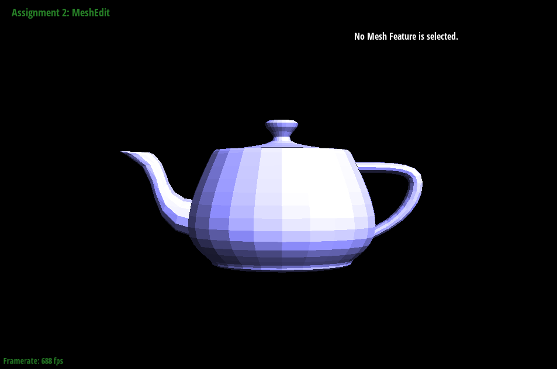
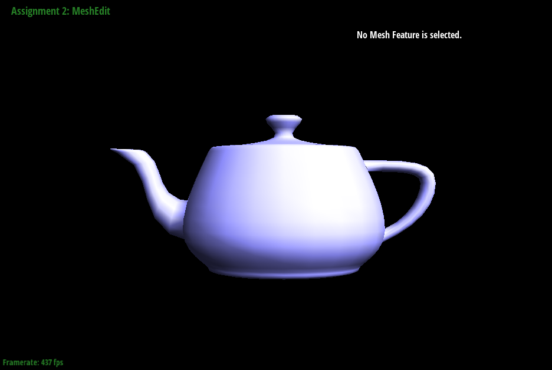
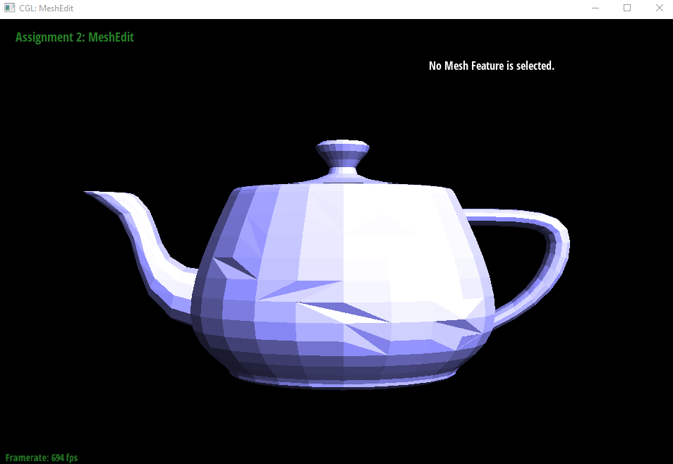
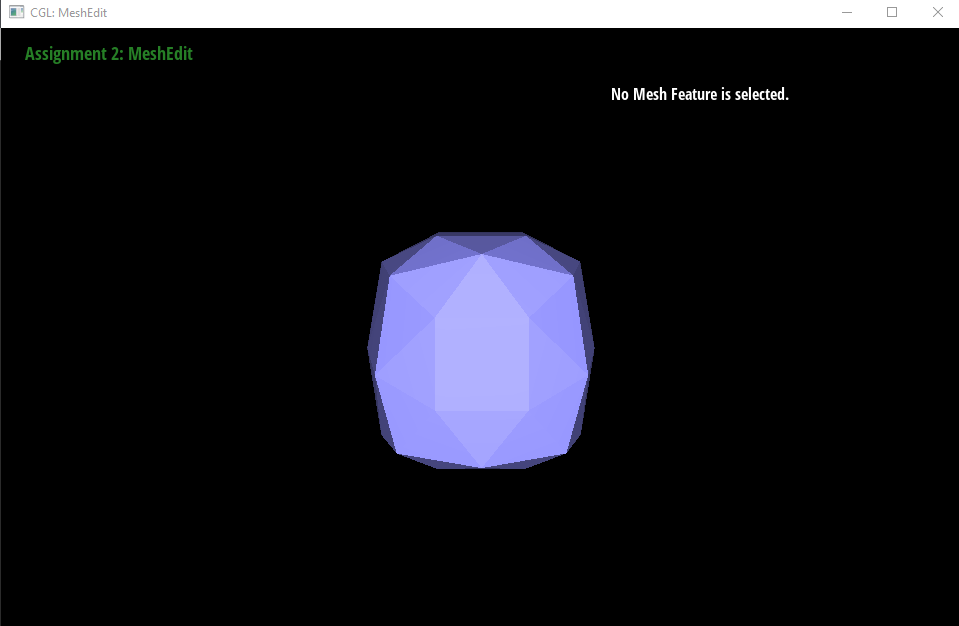
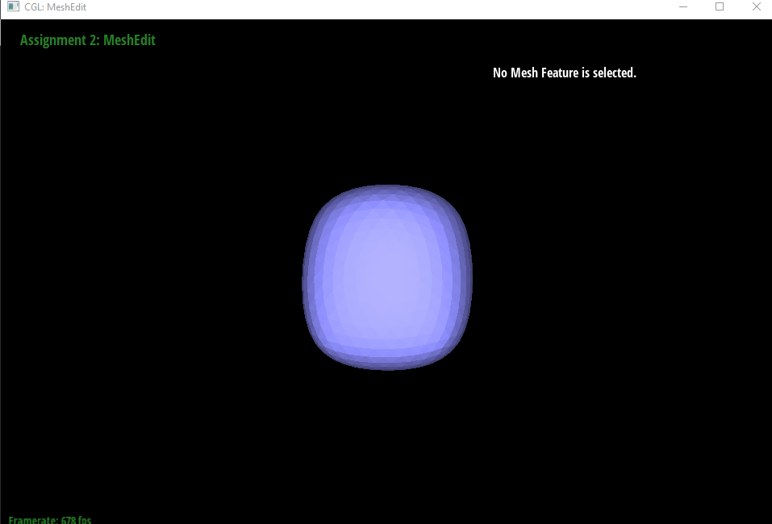

Task 1: Bezier Curves with 1D de Casteljau Subdivision
De Casteljau's algorithm is a recursive method whih evaluates polynomial which create bezier curves.
In my implementation, I created a helper function which evaluates thE lerp of the positions of the points, then, I loop in contiguous pairs of points and lerping the 2 points and then
storing in our nextLevel vector. This, reduces the number of points in half which creates a nice smooth curve.
One stepTwo stepThree stepFour stepFive stepMoved the first point to the last points
Task 2: Bezier Surfaces with Separable 1D de Casteljau
To extend it to surfaces, we modify our evaluate function to lerp 3D vectors instead of 2D. To get nice surfaces, we have to evaluate until we only have one point, thus, we evaluate with the parameter u and then v to get nice curve surfaces.
Supersampling rate: 1
Task 3: Area-Weighted Vertex Normals
I did a halfedge traversal around the current vertex by using the next() and twin() point. During this traversal, I summed up all of its face normals. Then, returned the result as a unit vector.

flat shading

Phong shading
Task 4: Edge flip
I followed the edge flip diagram shared on piazza to implement the edge flip functionality. First, I get all the components that I will modify (edges, vertices, faces, half edges). Then, assigned them using setNeighbors following
the diagram, and also update all of the halfedges of vertices, faces, and edges.
No flips

A few flip
Task 5: Edge split
Similar to Task 4, I found that drawing a diagram with the halfedges, edges, vertices, and faces is extremely helpful for the implementation.
First, I got all the components I needed (Half edges, vertices, edges, faces), and also created the 3 new edges, 6 half edges, 2 new faces, and 1 new vertex.
Then, I just assigned all the neighbors and half edges based on the diagram.
Orginal MeshOnly splitsOriginal MeshFlips and splits
Task 6: Loop Subdivision for Mesh Upsampling
To implement upsampling, I followed the recommendation in the comments.
First, I compute the new positions of all the vertices by going through all vertex of the mesh and also all the neighboring vertex position of each vertex.
Then, I apply the formula provided in the spec.
Then, I compute the position of the new midpoint after we split the nodes and store it in the edges->newPosition
Then, we split every edge in the original mesh and also mark the edges that need to be flipped.
Finally, we flipped all the new edges and update the vertex positions to the new positions.
The reason that the cube subdivides asymmetrically is due to the initial mesh where the faces have the diagonal split. This causes the middle of the cube
to asymmetrically split when we run our subdivision. To make it more symmetrical, we can either make all the faces have the same split by splitting all of the faces once before
we run the subdivision algorithm, or we make sure that the middle faces are split and the left and right face have the same mesh pattern.
No subdivisionOne Upsampling callTwo Upsampling callThree Upsampling callFour Upsampling callingPre-processed cube

One Upsampling calllTwo Upsampling call

Three Upsampling calling